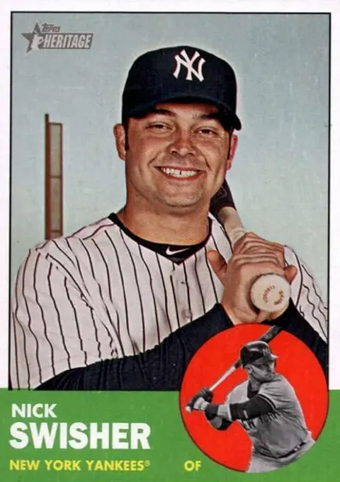

Nick Swisher "Swish"
Career Highlights & Facts
(Facts are AI-generated and may require verification)
- Selected as an All-Star during a championship-winning campaign.
- Maintained a streak of hitting at least 20 home runs in 9 consecutive seasons.
- Demonstrated elite plate discipline by reaching 75 bases on balls in 7 separate seasons.
Would you like to find out more about Nick Swisher?
Read Player Biography
Nick Swisher
January 4, 2012
/
in
BioProject - Person
/
by
admin
This bio is not assigned. Want to write a SABR bio? Contact
bioproject@sabr.org
.
Full Name
Nicholas Thompson Swisher
Born
November 25, 1980 at Columbus, OH (USA)
Stats
Baseball Reference
Retrosheet
Tags
None
Wikipedia Summary:
Nicholas Thompson Swisher is an American former professional baseball outfielder and first baseman in Major League Baseball (MLB). He was a switch hitter who threw left-handed, and played for the Oakland Athletics, Chicago White Sox, New York Yankees, Cleveland Indians and Atlanta Braves. He won the 2009 World Series with the Yankees and was an All-Star in 2010. A power hitter with excellent plate discipline, Swisher hit at least 20 home runs in each of nine consecutive seasons from 2005 to 2013, and reached 75 bases on balls on seven occasions in that span.
Career Totals
| WAR | AB | H | HR | BA | R | RBI | SB | OBP | SLG | OPS | OPS+ |
|---|---|---|---|---|---|---|---|---|---|---|---|
| 21.5 | 5369 | 1338 | 245 | .249 | 805 | 803 | 13 | .351 | .447 | .799 | 113 |
Statistics via Baseball-Reference.com
The Original Clue